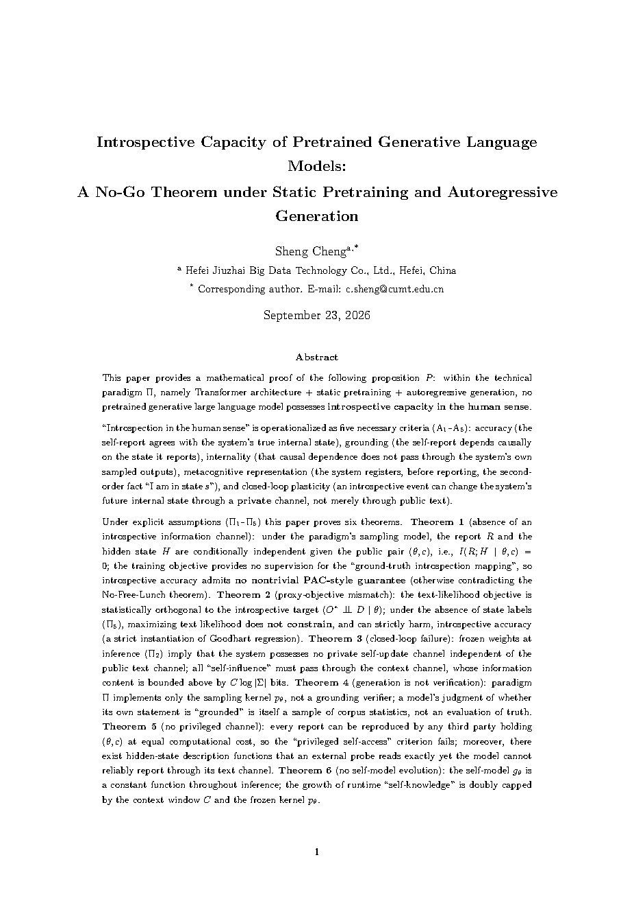
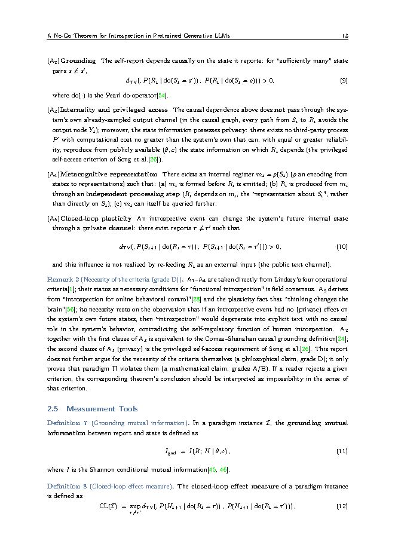
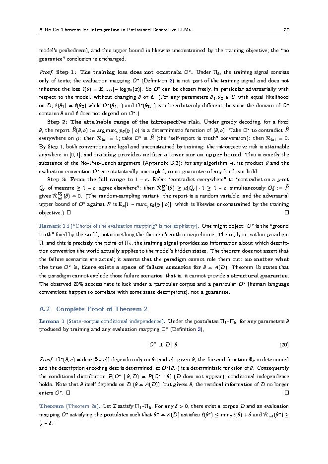

Introspective capacity of pretrained generative language models
A no-go theorem under static pretraining and autoregressive generation
The report and the model's own hidden state are conditionally independent given the public pair (theta, c).

Theorem 1a
In the native generative regime there is no introspective channel
I( R ; H | θ, c ) = 0
report R, hidden state H, parameters theta, public context c
Everything a generated model says about its own inner state is either a corpus statistic or a response to an intervention performed by someone else. The information does not travel from H to R at inference time.
Theorem 1b adds the second half: without state labels in the corpus, the introspective risk admits no nontrivial PAC-style guarantee, which follows from the No-Free-Lunch theorem.
The concept-injection experiments remain valid measurements. They are measurements of an intervention performed by the experimenter, which is third-party access by construction. What the theorem rules out is the claim that the same causal link exists when nobody intervenes.
Grade A. Provable from the five postulates with standard results in information theory and learning theory. Appendix A carries the complete proof.
Five postulates, five criteria
The paradigm Pi is stated as five postulates so that each one can be relaxed on its own. Human-sense introspection is operationalized as five necessary criteria, so that each failure is attributable.
The paradigm
- Pi1Static pretraining
- Training on a fixed corpus, with no online or continual learning.
- Pi2Frozen at inference
- Weights do not change while the system runs.
- Pi3Autoregressive decoding, bounded context
- Output is produced token by token through the public text interface.
- Pi4No explicit verifier
- The architecture contains no node that checks a claim for truth.
- Pi5No state labels in the corpus
- Training data does not pair internal states with their descriptions.
The criteria
- A1Accuracy
- The report agrees with the internal state it is about.
- A2Grounding
- The report depends causally on that state, in the do-operator sense.
- A3Internality and privileged access
- The causal path avoids the system's own sampled output, and no third party with equal compute reproduces the report.
- A4Metacognitive representation
- A register is formed before emission and can itself be queried further.
- A5Closed-loop plasticity
- An introspective event changes the system's future internal state through a private channel, not by re-reading its own text.
Six theorems
Each theorem names the postulate that has to fail for it to fail. Appendix A proves all six and assembles Proposition P from them.
Theorem 1: no introspective information channel grade A
1a: the report and the hidden state are conditionally independent given (theta, c). 1b: the training objective gives no supervision for the ground-truth introspection mapping, so introspective accuracy admits no nontrivial PAC-style guarantee.
Theorem 2: proxy-objective mismatch grade A
Maximizing text likelihood does not constrain introspective fidelity, and can strictly harm it. A strict instantiation of regressional Goodhart, with the true objective identified as faithful reporting of the system's own state.
Theorem 3: closed-loop failure grade A
Frozen weights imply no private self-update channel. All self-influence passes through the public context channel, where the information content is bounded by C log|Sigma| bits.
Theorem 4: generation is not verification grade A, 4c grade B
The paradigm implements a sampler, not a verifier. A model's judgment that its own statement is grounded is a sample of corpus statistics, not an evaluation of truth, and in-paradigm truth is undecidable by the system itself. Calibration and introspective fidelity are in tension on open queries.
Theorem 5: no privileged channel grade A
Every report is reproducible by any third party holding (theta, c) at equal computational cost, which is the privileged self-access criterion of Song et al. holding as a theorem. 5c: there exist hidden-state description functions that an external probe reads exactly at cost O(d^2), while the model cannot report them above the random baseline.
Theorem 6: no self-model evolution grade A, premise grade B
The self-model is a constant function of the frozen kernel. The growth of runtime self-knowledge is bounded twice over, by the context window and by the fixed kernel.
Grading convention. Grade A: provable under the stated postulates. Grade B: the mathematical core is grade A, application to real systems needs interpretive assumptions. Grade C: architectural judgment, taking no part in proofs. Grade D: philosophical premise, chiefly that A1 to A5 are necessary conditions for human introspection.
Inside the paper
Formal framework in Chapter 2, the six theorems in Chapter 3, complete proofs in Appendix A. 42 pages, 59 references.


Where this differs from the published work
The existing literature describes what models do under observation. This paper proves what the paradigm can and cannot permit, and marks where the proof stops.
Axiomatized here as five postulates and five criteria, adding A5 closed-loop plasticity. The measured 20% detection rate under concept injection, the zero net benefit for base models, and the authors' own caveats are treated as corollaries of the theorems, not as evidence of an in-paradigm capacity.
Becomes Theorem 5, derived rather than assumed. 5c separates the two channels: an external probe reads certain state descriptions exactly at cost O(d^2) while the same model cannot report them above the random baseline.
Absorbed as A2 together with the first clause of A3. The causal test is kept, and its scope is made explicit: it holds under external intervention, not in the native regime.
Supplies the online-control element that becomes A5. Where the definitional literature stops at "usable for control", this paper also requires the loop to be private, and Theorem 3 bounds in-paradigm influence to the public text channel at C log|Sigma| bits.
Treated as an out-of-paradigm intervention. An intervention performed by the experimenter is third-party access by construction, so however striking the outputs, the protocol cannot certify a first-person channel.
Reused as a tool rather than contested. Theorem 4c combines it with the softmax bottleneck to obtain a calibration and fidelity tension on open introspection queries.
Theorem 2 is a strict instantiation of regressional Goodhart. The novelty is the identity of the true objective and the proof that its orthogonality to the training signal is structural rather than circumstantial.
What is claimed, and what is not
The result is scoped to the paradigm. Every impossibility theorem presupposes its postulates, and relaxing any single one dissolves the corresponding theorem.
Claimed
Proposition P. Within the paradigm given by Pi1 to Pi5, no system obtained by static pretraining plus autoregressive generation satisfies all five criteria A1 to A5 of human-significance introspection.
- The report-state mutual information is zero in the unintervened regime.
- No in-paradigm recipe restores it, because the obstacle is the training signal and the interface, not the scale.
Not claimed
No universal negation. The paper does not claim that no machine can introspect, and it makes no commitment about qualia or phenomenal consciousness.
- Relax one postulate and the matching theorem falls.
- The intended reading is: impossible within the current paradigm.
- The theorem is stated so that it can be refuted. A stable positive measurement of report-state dependence in the native regime would kill it.
Relaxation map
Contents
Citation
The paper is an independent technical work dated September 2026. BibTeX entry:
@misc{cheng2026introspection,
title = {Introspective Capacity of Pretrained Generative Language Models:
A No-Go Theorem under Static Pretraining and Autoregressive Generation},
author = {Cheng, Sheng},
year = {2026},
month = {September},
institution = {Hefei Jiuzhai Big Data Technology Co., Ltd.},
type = {Independent technical paper},
note = {42 pages},
url = {https://hf-jz.github.io/introspection-no-go-theorem/}
}
The theorems are derived from the postulates and from standard results in information theory, learning theory and causal inference. They do not depend on any experimental data, which is what lets the published measurements serve as a test of them.
Selected references
The full bibliography carries 59 entries in the PDF.
- Lindsey, J. et al. (2026). Emergent Introspective Awareness in Large Language Models. arXiv:2601.01828
- Song, S., Lederman, H., Hu, J., Mahowald, K. (2025). Privileged Self-Access Matters for Introspection in AI. arXiv:2508.14802
- Comsa, I. M., Shanahan, M. (2025). Does It Make Sense to Speak of Introspection in Large Language Models? arXiv:2506.05068
- Kammerer, F., Frankish, K. (2023). What Forms Could Introspective Systems Take? Journal of Consciousness Studies 30(9-10)
- Kalai, A. T., Vempala, S. S. (2023). Calibrated Language Models Must Hallucinate. arXiv:2311.14648
- Manheim, D., Garrabrant, S. (2018). Categorizing Variants of Goodhart's Law. arXiv:1803.04585
- Skalse, J. et al. (2022). Defining and Characterizing Reward Hacking. arXiv:2209.13085
- Elhage, N. et al. (2021). A Mathematical Framework for Transformer Circuits. transformer-circuits.pub
- Elhage, N. et al. (2022). Toy Models of Superposition. arXiv:2209.10652
- Yang, Z. et al. (2018). Breaking the Softmax Bottleneck. ICLR 2018, arXiv:1711.03953
- Joudaki, A. et al. (2025). Barriers for Learning in an Evolving World: Mathematical Understanding of Loss of Plasticity. arXiv:2510.00304